IDEA中从空JAVA项目中新建Servlet程序并连接tomcat
新建一个空的java项目
-
右键项目，选择添加框架支持
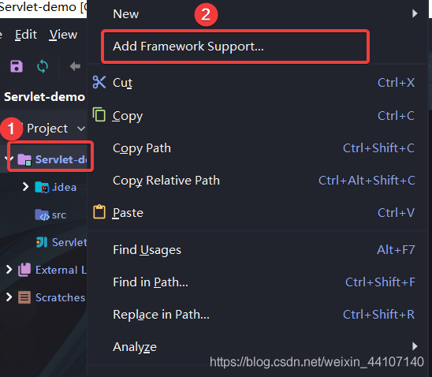
-
选择WebApplication
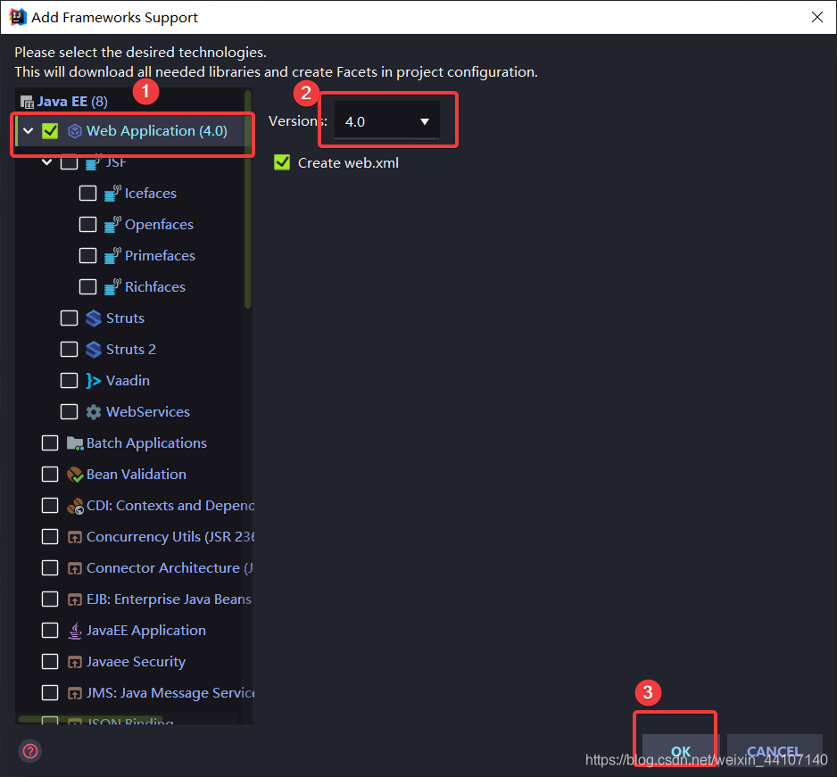
-
然后就会多出一个Web文件夹
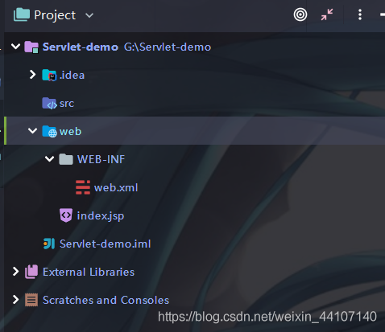
-
在WEB-INF文件夹下新建lib和classes两个文件夹
-
把servlet-api.jar放入lib文件夹下
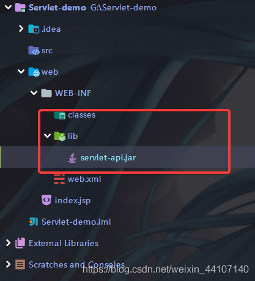
-
File->project structure->modules->paths 更改编译目录为上面创建的classes路径
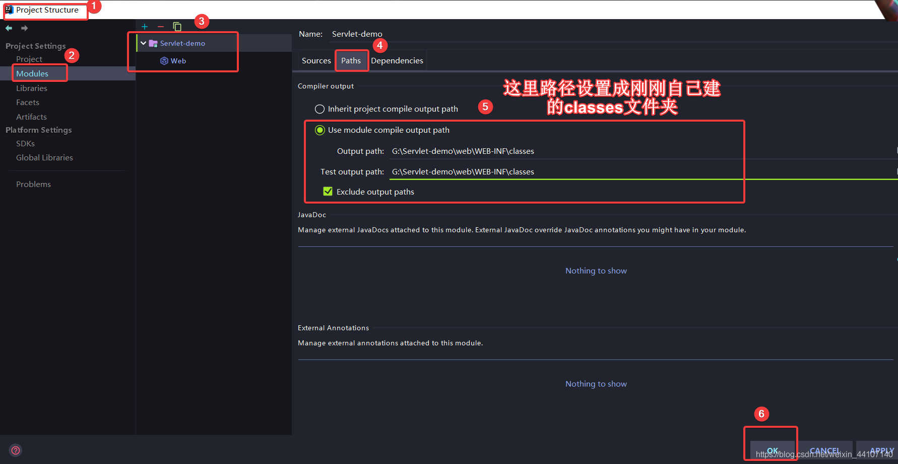
-
File->project structure->modules->dependencies 新增servlet-api.jar包依赖
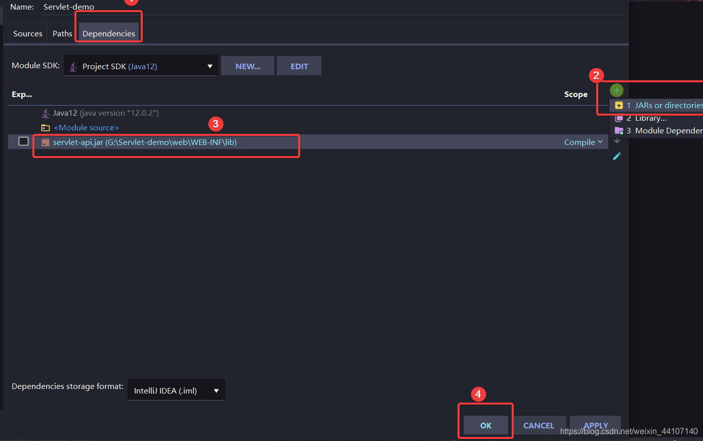
-
File->project structure->artifacts 新增一个部署
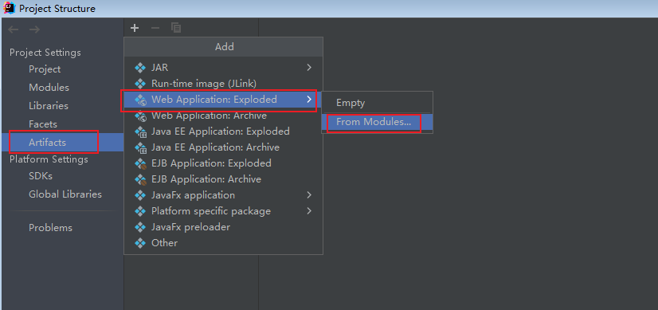
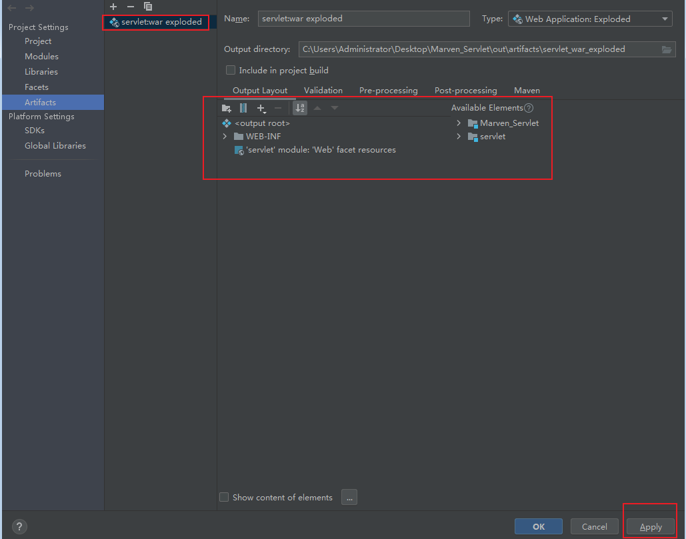
-
新建Servlet
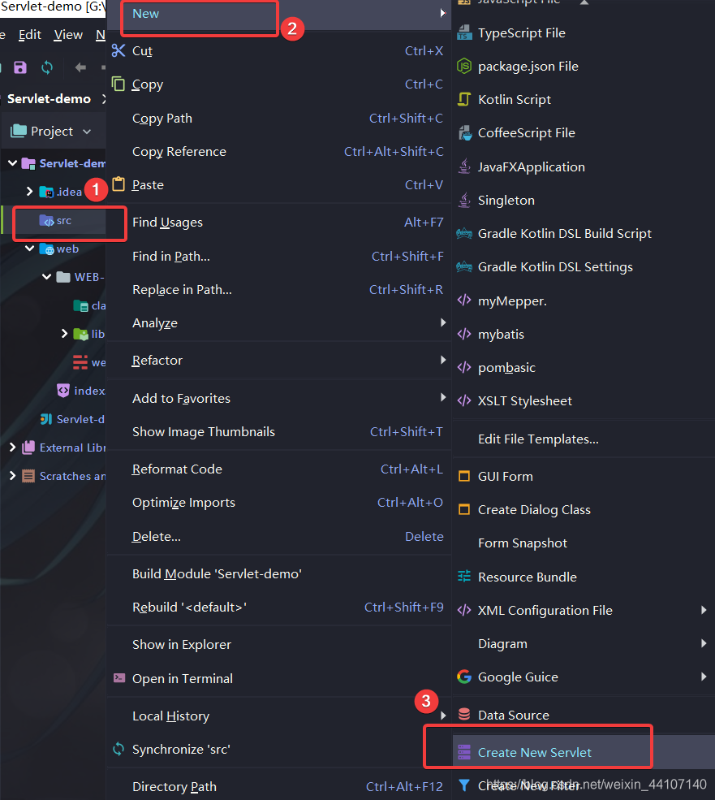
-
下面开始部署tomcat,首先Run->Edit Configuration
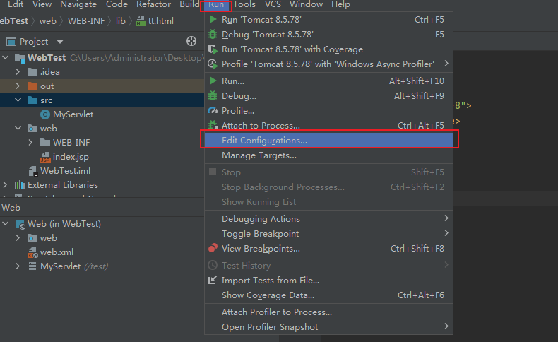
server配置
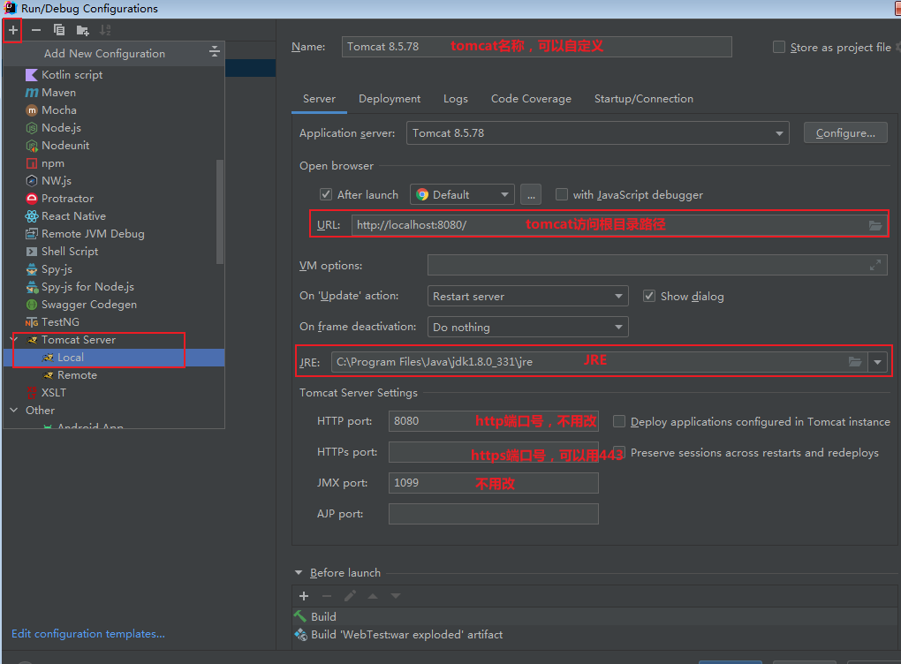
Deployment配置
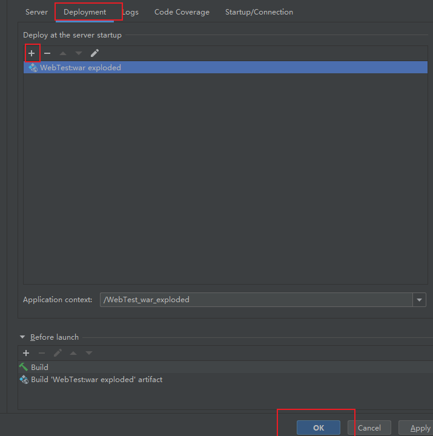
-
到此tomcat配置完成，选择tomcat运行，就可以通过tomcat提供Servlet服务了